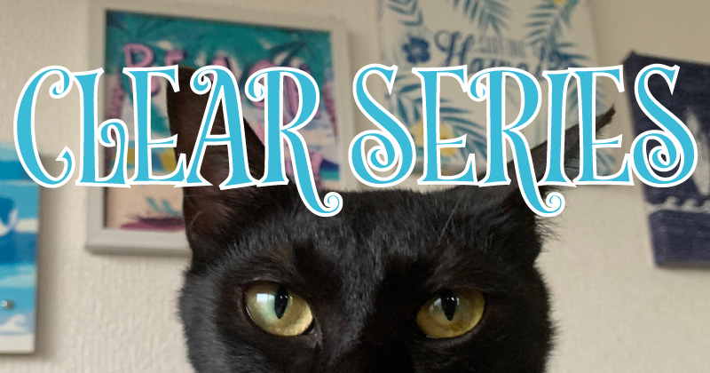
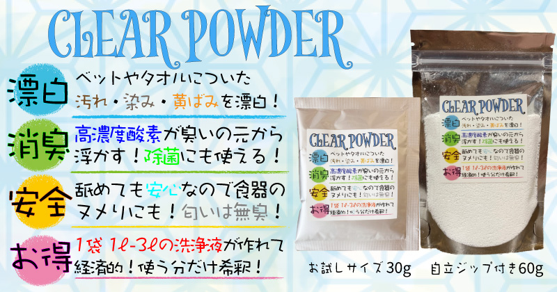
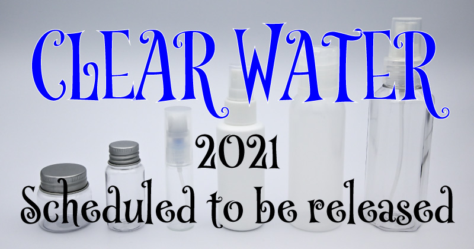

汚れ落とし・消臭に使える
CLEARシリーズのご案内

安心・安全かつ効力も高い！がコンセプトなDog&Cat CLEARのオリジナル商品になります。
猫18匹＆犬２匹との生活の中で、これは欠かせない！と感じる部分を見つけ、商品としてお客様へ展開してまいります。
現在はペット用洗剤のみになりますが、2021年の年内にはドライシャンプーの製造を予定しております。
CLEAR POWDERとCLEAR WATER(仮)をよろしくお願いいたします★
CLEAR POWDER

CLEAR WATER

2021年内には発売を予定しております犬猫用にお使いいただけるドライシャンプーになります★
手にスプレーをふきかけて、愛犬・愛猫をマッサージ。
その後に乾いたタオルで乾拭きするだけで簡単に身体の汚れをキレイさっぱり！
界面活性剤などの薬品や、香料も不使用な商品を展開できるよう行動してまいります。
手作りされる飼い主さまですと、野菜など食材に付着した農薬を落とすこともできる商品としても考えております。
お楽しみに！
愛犬：愛猫の健康面に関しましては多くの飼い主さまの健康面を本気で思考して改善していくのが大事になっております。 この点の思考を飼い主様の「行動によって構成していくのであれば、 健康面を本気で思考していくのであれば、改善点を思考して行動していくのが大臣なっております。 この点の思考を飼い主さまが行動していくのであれば、改善点を思考していくことができるのです。